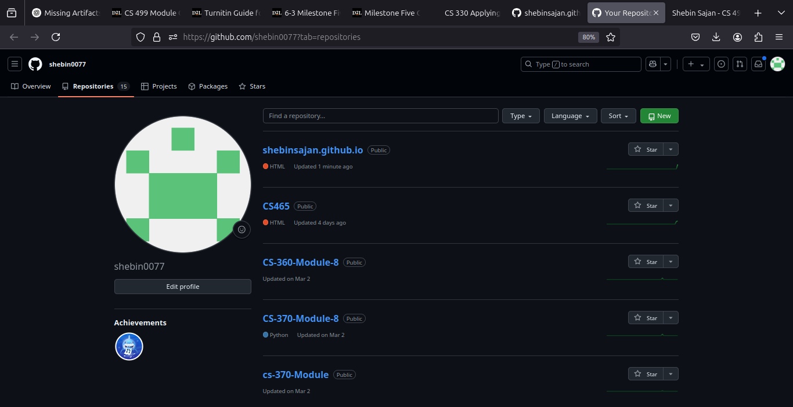

I. Self-Introduction
I have been enrolled in the Computer Science program for approximately four years...
II. ePortfolio Setup
Here is a screenshot and link to my GitHub Pages site:
https://shebinsajan.github.io

III. Enhancement Plan
Descriptions and pseudocode for software engineering, data structures, and database enhancements.
IV. Overall Skill Set
This ePortfolio showcases my strengths in software design, algorithm development, and database integration.